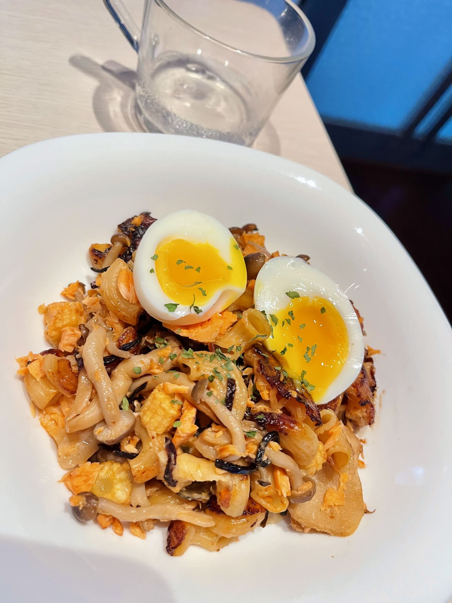

煮飯魂又燃起來了
姊姊給的飛利浦萬用鍋（俗稱金小萬）放在櫃子裡好久了，最近補追《黑白大廚II》之後，整個煮飯魂又燃起，決定多嘗試一些不同的料理。今天本來想做米飯類的，但實在太餓了，只好選比較快速的通心麵，鮭魚、菇類全部疊進去，加壓煮熟後拌一拌，配上半熟蛋，就是一份省事又滿足的晚餐。🥰
鮭魚是很好的蛋白質與 omega-3 來源，搭配通心粉的碳水、菇類的纖維，再加一顆半熟蛋補足口感與蛋白質。
食材與醬汁
食材
- 通心粉約 60–80g
- 鮭魚擦乾表面
- 鴻禧菇適量
- 玉米筍適量
調味醬汁（先在碗裡拌勻）
- 水1 碗，剛好蓋過通心粉
- 味噌0.5～1 茶匙
- 醬油0.5 茶匙
- 糖／薑絲／蒜末少許
起鍋提味
- 奶油1 塊
- 鹽昆布少許
做法
蔬菜鋪底防焦
鴻禧菇與玉米筍鋪在鍋底墊高，上面放入通心粉，最上層擺上整塊生鮭魚。
倒醬汁加壓
倒入拌勻的調味醬汁，確定液體有蓋過通心粉，蓋上鍋蓋並鎖緊。
模式選擇
麵條軟透吸汁選「健康蒸」或「米飯」；想要帶煎烤香氣就選「烤海鮮」。
開蓋挑刺與拌勻
洩壓開蓋後，趁熱用筷子將鮭魚的大刺挑掉、魚肉撥碎，最後丟入奶油與鹽昆布快速拌勻即可。
營養師的小提醒
半熟蛋額外補一份完整蛋白質，蛋黃流動的口感也讓整鍋更潤口，不需要再加醬料
鴻禧菇跟玉米筍鋪底除了防焦，也順手補了平常最容易忽略的膳食纖維
味噌跟鹽昆布已經有鹹度，額外調味時可以先少量、煮完再視情況補
